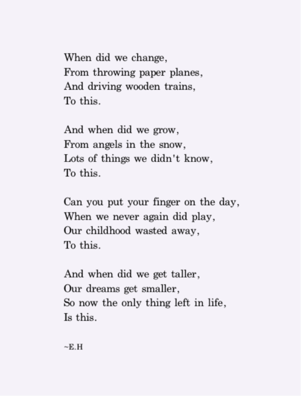
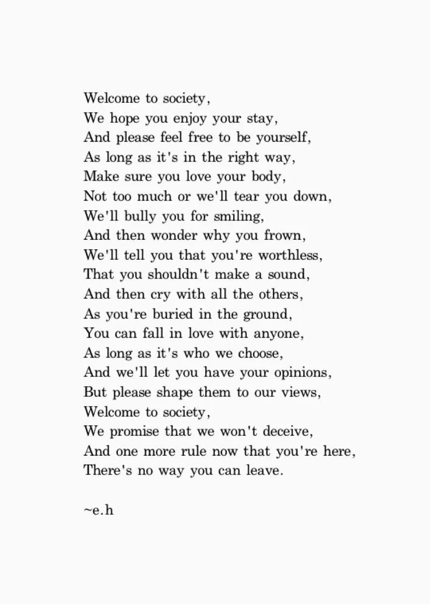
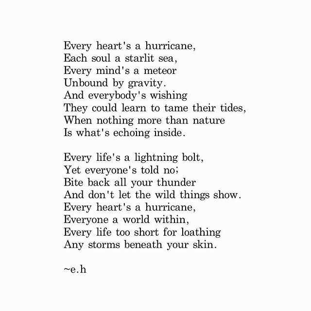
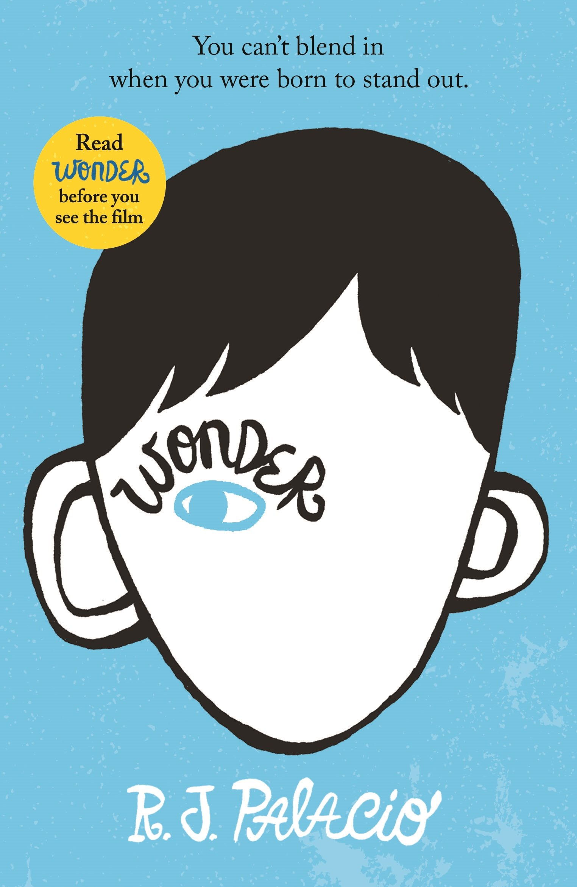
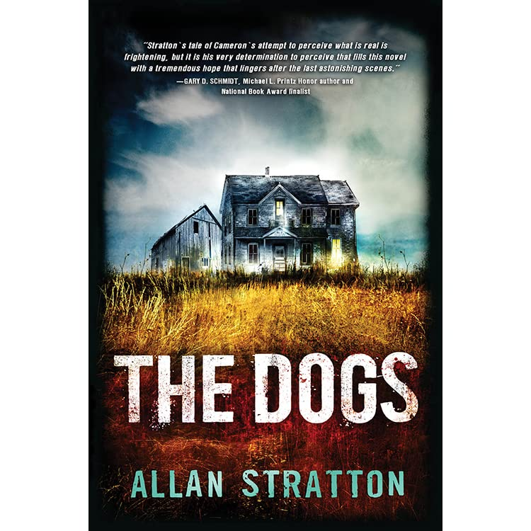
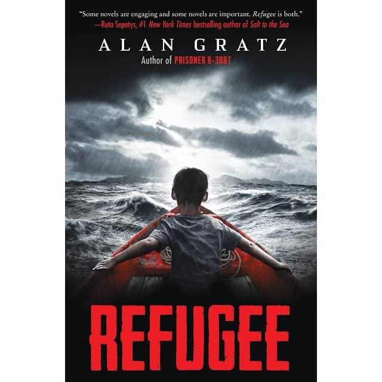

Hi! Welcome to My Poetry and Reading Page, here I have some pictures of some poetry I read and some descriptions of books I love.
Although I love drawing, I also like to read, specifically poetry and storybooks. I love al sorts of poetry because it's away you can rewind a little and read about something you are really interested in.
I like to read poems by Erin Hanson. She is an Austrailian poet who is 18 years old. I like to read some of her poems because they are very general, easy to understand, short but have lots of meaning to them.
Reading poetry also helps you understand and think deeper about what the actual meaning really is. The great thing about this is that from one piece of text you could have your own opinion on what it means to you. Some poems I like specifically are: "Welcome to Society", "Every Heart's A Hurricane", and "This". They all talk about reality and how we changed throughout the years. If you would like to read them, you can find them below.
  Although poetry is short pieces of literature I like to read, I love to read many different books as well.
I like to read books of all genres such as horror, sci-fi, comedy, thriller, drama, mystery, etc. I manily like reading because it's a good way to spend time and would help you improve your vocabulary and reading skills. Some of my favourite authors are Raina Telgemeier, Allan Stratton, and R.J Palacio. These people write a lot of meaningful and entertaining books for all ages and would keep you interested in the story throughout every chapter you are reading.
My favourtie books are: "The Dogs" by Allan Stratton, "Refugee" by Alan Gratz, and "Wonder" by R.J Palacio. Below are some pictures of the books.
  This book is a great thriller movie and has an amazing storyline to it. It's about a boy named Camermon and how he realizes he's livinga life of secrets and mystery Cameron and his mother moved far away from their last home. They move often because they don’t want Cameron’s dad to find them. Cameron’s mother and father split apart and Cameron lives with his mom now. Cameron’s dad is always trying to find them to take Cameron away from his mom and tries to hurt her. At least, this is what his mom has been telling him for the past few years, although he always wants to at least talk to his dad he can’t, because his mom is afraid he could trace down the call and find out where they live. Cameron goes to school nearby and he often gets bullied there, he has also heard mysterious story about an old man that used to live in the house that he’s living in right now.
I love this book because it tells a maginificant story about refugees and all their expiriences. It gives an insight on real situations people are in and went through in the past years. This book tells a story of three different kids in different time eras and different places. This book talks about Josef in 1938, Mahmoud in 2015, and Isabel in 1994. Josef lives in Germany with his mother, father and his little sister. One day of the Night Of The Glass, they get attacked by the Nazis. This was one of the tragic things that happened to them during that time Josef’s father has also been sent to a concentration camp for disrespecting them. When Josef’s dad comes back they decide to leave Germany and go somewhere else. Meanwhile, Mahmoud in 2015 was peacefully doing his homework one day and all of a sudden a big bomb exploded in the side of his apartment building. Fortunately, his brother and him made it out successfully, and so did their mother and father with Hana (their younger sister). This dreadful event led Mahmoud and his family leaving their home as well to Turkey. Lastly, Isabel is a girl in 1994 and she is living in Cuba, struggling for food. Later on there is riot destroying her home town, forcing them to leave on a boat their neighbors had made.
I read this book roughly around a year and a half ago, and this is a sympathetic story about a young boy who is different from the other in school. It's about accepting differences and learning to come out of your comfort zone. This story is about a boy named August Pullman. He is not a typical ordinary boy, he has a facial disorder that makes him look different from everyone else. This disorder makes him feel uncomfortable about himself when he goes outside because most people just stare. This gets harder for him when he starts going to school for the first time in grade 5 because in the past years he was homeschooled. He soon gets bullied and everyone treats him differently like he doesn’t belong. This continues until he finds friends named Jack Will and Summer. They were his best friends and were by his side for the toughest times.